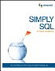
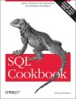
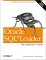

 Simply SQL by Rudy Limeback
Introduction to learning SQL SQL Cookbook by Anthony Molinaro
Each recipe demonstrates how to accomplish a given task. Perfect for quick example code to 'make it do the right thing''.Oracle SQL Pocket guide by J Gennick
Bargain priced SQL reference for Oracle Database 10g, R2 including the free 10g Express Edition (XE), Microsoft SQL Server 2005, MySQL 5, IBM DB2 8.2, PostreSQL 8.1 database.
Oracle Built in Packages by Steven Feuerstein et al
Syntax Reference book for Oracle's built-in packages, with extensive examples.
The sample code can be downloaded from oreilly.com
Oracle PL/SQL Programming by Steven Feuerstein et al.
The definitive PL/SQL book
(5th Edition Oct 2009) Oracle SQL*Loader by Jonathan Gennick
Load data into Oracle with SQL*Loader.